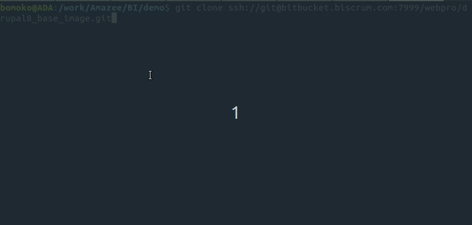
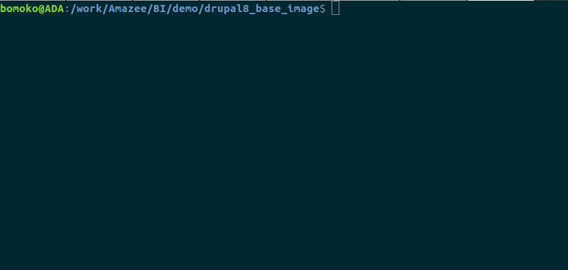
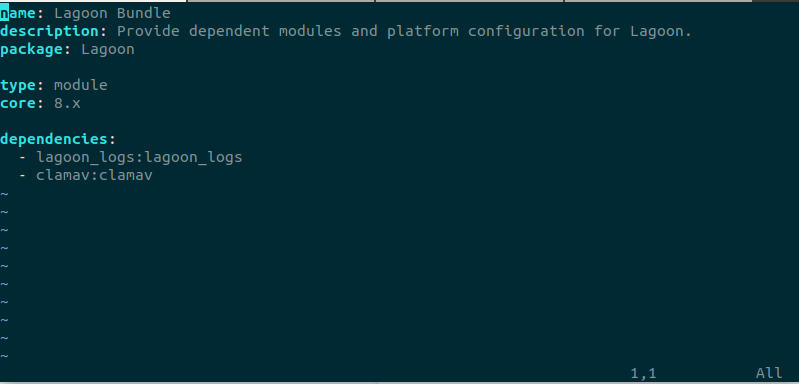
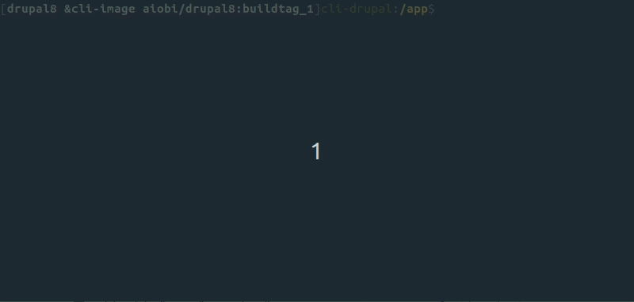
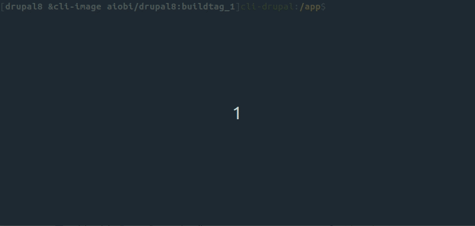
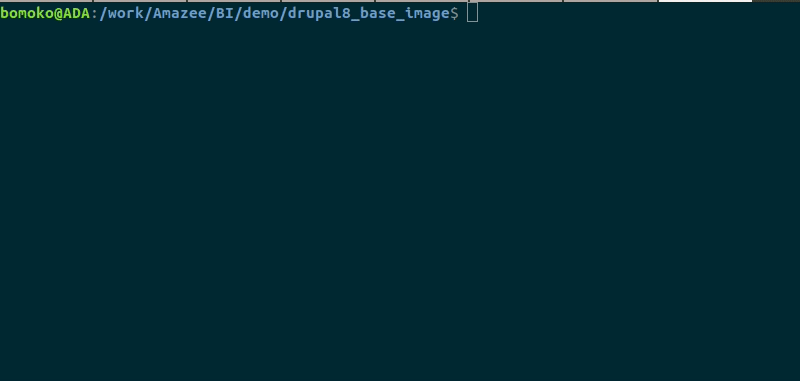
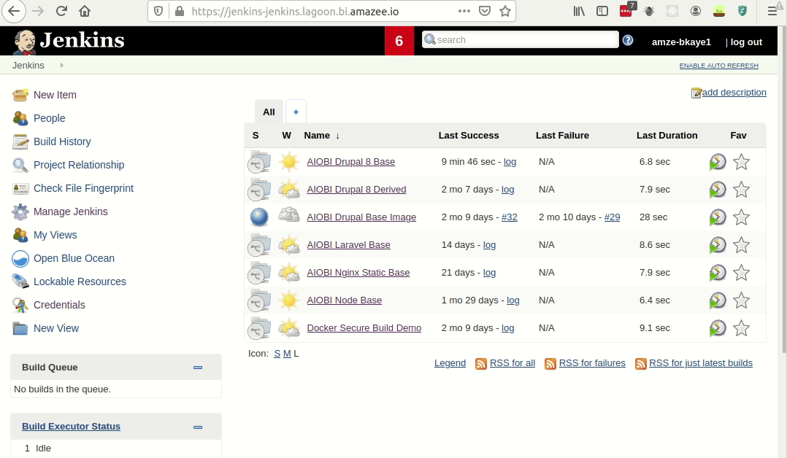
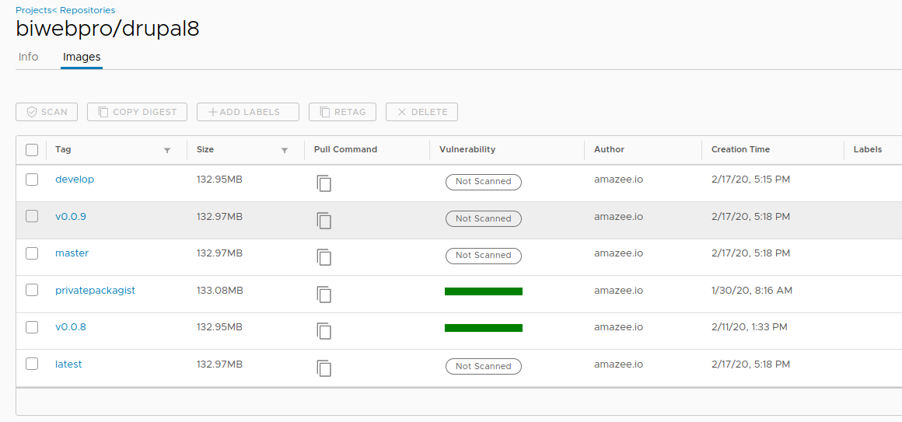

Base Images#
What is a base image?#
A base image is a Docker image that can be and is used by a project deployed on Lagoon. A base image provides a way to ensure that nothing is brought into the codebase/project from upstream that has not been audited. It also allows us to ensure that anything we might need on the deployed environment is available - from lower-level libraries to application-level themes and modules.
Base images save time and resources when you know what system is being deployed to - if shared packages are included in the base image, they don’t have to be deployed to hundreds of sites individually.
Derived images#
A derived image is one that extends a base image. For example, you might need to make several blog sites. You take our Drupal image, customize it to include all of the modules and themes you need for your blog sites, and deploy them all with that blog image. Templates are derived from base images.
All derived images should pull in the composer.json file (via repositories like Packagist, Satis, or GitHub) so that they are using the most recent versions of the base packages.
Further, the derived image includes a call to the script /build/pre_composer, which can be used by the base image to run scripts, updates, etc., downstream in the derived images. For instance, it should run by default when any package is updated or installed at the derived image, and the pre_composer script will then update the base image package.
Anatomy of a base image#
Note:
Note: this document will talk about Drupal and Laravel base images as examples, as it was originally written for a client who uses those technologies in their Lagoon projects. It will be expanded to cover the contents of other base images, but none of the processes differ, no matter what the content of your base image.
Base images are managed with Composer and hosted in Bitbucket, Github, or GitLab (whatever your team is using). Each base image has its own repository.
Metapackages#
The metapackage is a Composer package that wraps several other components. These include, for example, the core files for Laravel or Drupal, along with any needed modules or themes. This way, you do not need to include Laravel or Drupal, etc., as a dependency in your project.
Here’s an example from the composer.json in a Laravel base image:
"require": {
"amazeelabs/algm_laravel_baseimage": "*"
},
We only require this metapackage, which points to a GitHub repository.
docker-compose.yml#
Other pieces of your project are defined in docker-compose.yml. For example, if you have a Drupal project, you need the Drupal image, but you also need MariaDB, Solr, Redis, and Varnish. We have versions of these services optimized for Drupal, all of which are included in docker-compose.yml.
Drupal#
The Drupal base image contains the following contributed tools and modules, in addition to Drupal core:
- Drupal Console
- Drush
- Configuration Installer
- Redis
- Poll
- Search API
- Search API Solr
- Varnish Purge
- Purge
- Admin Toolbar
- CDN
- Password Policy
- Pathauto
- Ultimate Cron
Laravel#
Configuration#
The base images have provided the default values for the environment variables used by Laravel.
These are values for:
DB_CONNECTIONDB_HOSTDB_PORTDB_DATABASEDB_USERNAMEDB_PASSWORDREDIS_HOSTREDIS_PASSWORDREDIS_PORT
Ensure that your config files (typically located in /config) make use of these by default.
Queues#
If your project makes use of queues, you can make use of the artisan-worker service. It is a worker container, used for executing artisan queue:work. This is disabled by default - look at the comments in docker-compose.yml.
Understanding the process of building a base image#
There are several parts to the process of building a base image. All of the major steps are represented in the Makefile. The Jenkinsfile contains a more stripped-down view. Taking a look at both files will give you a good understanding of what happens during this process. Most steps can be tested locally (this is important when building new versions of the base image). After you’ve created and tested everything locally and pushed it up, the actual base image is built by Jenkins and pushed to Harbor.
Makefile and build assumptions#
If you're planning on running locally, there are some minimum environment variables that need to be present to build at all.
Base image build variables#
Variables injected into the base image build process and where to find them.
BUILD_NUMBER- This is injected by Jenkins automatically.GIT_BRANCH- This is provided by the Jenkins build process itself. Depends on the branch being built at the time (develop, main, etc.).DOCKER_REPO/DOCKER_HUB- This is defined inside the Jenkinsfile itself. It points to the Docker project and hub into which the resulting images will be pushed.DOCKER_USERNAME/DOCKER_PASSWORD- These are used to actually log into the Docker repository early in the build. These variables are stored inside of the Jenkins credentials. These are used in the Jenkinsfile itself and are not part of the Makefile. This means that if you’re building base images outside of Jenkins (i.e. locally, to test, etc.) you have to run adocker loginmanually before running any of the make steps.
In practice, this means that if you're running any of the make targets on your local machine, you'll want to ensure that these are available in the environment - even if this is just setting them when running make from the command line, as an example:
GIT_BRANCH=example_branch_name DOCKER_HUB=the_docker_hub_the_images_are_pushed_to DOCKER_REPO=your_docker_repo_here BUILD_NUMBER=<some_integer> make images_remove
Makefile targets#
The most important targets are the following:
images_build: Given the environment variables, this will build and tag the images for publication.images_publish: Pushes built images to a Docker repository.images_start: Will start the images for testing, etc.images_test: Runs basic tests against images.images_remove: Removes previously built images, given the build environment variables.
Example workflow for building a new release of a base image#
There are several steps to the build process. Most of these are shared among the various base images. These mostly correspond to the Makefile target described above.
- Docker Login - The Docker username, password, and URL for Harbor are passed to the Docker client.
- Docker Build - The
make images_buildstep is run now, which will: - Ensure that all environment variables are prepared for the build.
- Run a
docker-compose build. This will produce several new Docker images from the current Git branch. - Images Test - This will run the
make images_testtarget, which will differ depending on the images being tested. In most cases this is a very straightforward test to ensure that the images can be started and interacted with in some way (installing Drupal, listing files, etc.) - Docker Push - This step runs the logic (contained in the make target
images_publish) that will tag the images resulting from the Docker Build in Step 2 and push them to Harbor. This is described in more detail elsewhere in this guide. - Docker Clean Images - Runs the make target
images_remove, which simply deletes the newly built images from the Docker host now that they are in Harbor.
Releasing a new version of a base image#
There are many reasons to release a new version of a base image. On Drupal or Laravel, Node.js, etc images, it may be in order to upgrade or install a module/package for features or security. It may be about the underlying software that comes bundled in the container, such as updating the version of PHP or Node.js. It may be about updating the actual underlying images on which the base images are built.
The images that your project's base images are built on are the managed images maintained by the Lagoon team. We release updates to these underlying images on a monthly (or more fequent) basus. When these are updated, you need to build new versions of your own base images in order to incorporate the changes and upgrades bundled in the upstream images.
In this section we will demonstrate the process of updating and tagging a new release of the Drupal 8 base image. We will add a new module (ClamAV) to the base. We’re demonstrating on Drupal because it has the most complex setup of the base images. The steps that are common to every base image are noted below.
Step 1 - Pull down the base image locally#
This is just pulling down the Git repository locally. In the case of the Drupal 8 base image. In this example, we're using Bitbucket, so we will run:
git clone ssh://git@bitbucket.biscrum.com:7999/webpro/drupal8_base_image.git

Step 2 - Make the changes to the repository#
Note:
Note: What is demonstrated here is specific to the Drupal 8 base image. However, any changes (adding files, changing base Docker images, etc.) will be done in this step for all of the base images.
In our example, we are adding the ClamAV module to the Drupal 8 base image. This involves a few steps. The first is requiring the package so that it gets added to our composer.json file. This is done by running a composer require.
Here we run:
composer require drupal/clamav

When the composer require process completes, the package should then appear in the composer.json file.
Here we open the composer.json file and take a look at the list of required packages, and check that the ClamAV package is listed, and see that it is there:

Step 2.2 - Ensure that the required Drupal module is enabled in template-based derived images.#
For any modules now added to the base image, we need to ensure that they’re enabled on the template-based derived images. This is done by adding the module to the Lagoon Bundle module located at ./web/modules/lagoon/lagoon_bundle. Specifically, it requires you to add it as a dependency to the dependencies section of the lagoon_bundle.info.yml file. The Lagoon Bundle module is a utility module that exists only to help enforce dependencies across derived images.
Here we open web/modules/contrib/lagoon/lagoon_bundle/lagoon_bundle.info.yml and add clamav:clamav as a dependency:

Adding a dependency to this will ensure that whenever the Lagoon Bundle module is enabled on the derived image, its dependencies (in this case, the just-added ClamAV module) will also be enabled. This is enforced by a post-rollout script which enables lagoon_bundle on the derived images when they are rolled out.
Step 2.3 - Test#
This will depend on what you’re testing. In the case of adding the ClamAV module, we want to ensure that in the base image, the module is downloaded, and that the Lagoon Bundle module enables ClamAV when it is enabled.
Here we check that the module is downloaded to /app/web/modules/contrib:

And then we check that when we enable the lagoon_bundle module, it enables clamav by running:
drush pm-enable lagoon_bundle -y

Warning:
Note: You’ll see that there is a JWT error in the container above. You can safely ignore this in the demonstration above - but, for background, you will see this error when there is no Lagoon environment for the site you’re working on.
With our testing done, we can now tag and build the images.
Step 3 - Tagging images
Images are versioned based on their Git tags - these should follow standard semantic versioning (semver) practices. All tags should have the structure vX.Y.Z where X, Y, and Z are integers (to be precise the X.Y.Z are themselves the semantic version - the vX.Y.Z is a tag). This is an assumption that is used to determine the image tags, so it must be adhered to.
In this example we will be tagging a new version of the Drupal 8 base image indicating that we have added ClamAV.
Here we demonstrate how to tag an image.
We check that we have committed (but not pushed) our changes, just as you would do for any regular commit and push, using git log.
- Commit your changes if you haven’t yet.
- We then check to see what tag we are on using
git tag. - Then, tag them using
git tag -a v0.0.9 -m “Adds clamAV to base.” - git -a, --annotate: Make an unsigned, annotated tag object
- Next, we push our tags with
git push --tags. - And finally, push all of our changes with
git push.
Danger:
Note: The tags must be pushed explicitly in their own step!

How Git tags map to image tags#
Danger:
Important note: Depending on the build workflow, you will almost certainly push the changes via the develop branch before merging it into the main branch.
An important point to remember here is that the Jenkins base image build process will tag images based on the most recent commit’s tag.
Images are tagged using the following rules, and images will be built for each of these that apply:
- When the main branch is built, it is tagged as
latest. - When the develop branch is built, it is tagged as
development. - If the commit being built is tagged then that branch will be built with that commit’s tag.
- This is how we release a new version as we demonstrated above. It can also be used to make ad hoc builds with fairly arbitrary tags - be reasonable with the tag names, it has only been tested with semver tags.
Step 4 - Building the new base images#
Note:
Note: Generally you will have a trigger strategy set up here for automatic builds, but as that will differ based on your needs and setup, this explains how to build manually.
- Visit your Lagoon Jenkins instance.
- Select the project you are working on (in this case, AIOBI Drupal 8 Base).
- Click the branch you would like to build.
- Click “Build Now.”

This will kick off the build process which, if successful, will push up the new images to Harbor.
If the build is not successful, you can click into the build itself and read the logs to understand where it failed.
As shown in the screenshot below from Harbor, the image we’ve just built in Jenkins has been uploaded and tagged in Harbor, where it will now be scanned for any vulnerabilities. Since it was tagged as v0.0.9, an image with that tag is present, and because we built the main branch, the “latest” image has also been built. At this stage, the v0.0.9 and “latest” images are identical.

Acknowledgement#
The base image structure draws heavily (and, in fact, is a fork of) Denpal. It is based on the original Drupal Composer Template, but includes everything necessary to run on Lagoon (either the local development environment or on hosted Lagoon).